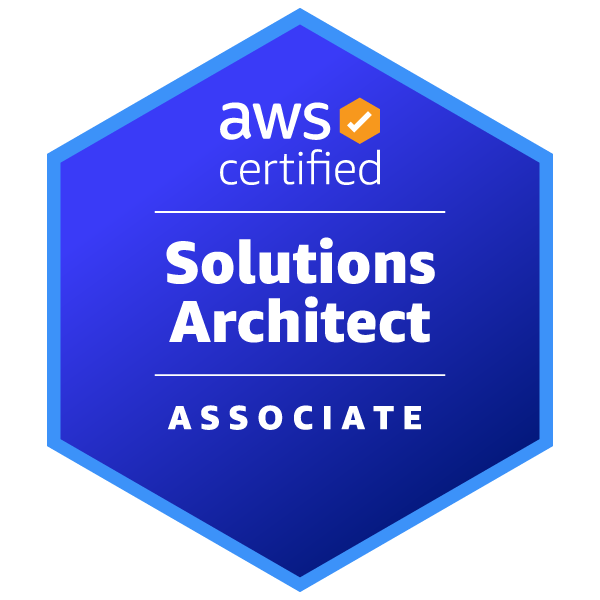
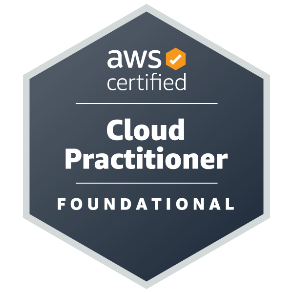

LyonnelDzotangTchassen
About me
Senior Consultant · CGI, Québec, Canada
I am Lyonnel Dzotang Tchassen, a senior developer based in Québec, Canada. With a Master's degree in Information Technology from the University of Douala and Oracle & AWS certifications, I have over 11 years of experience designing and building mission-critical information systems.
Currently a Senior Consultant at CGI in Québec, I design microservices architecture, build cloud-native applications on AWS (Lambda, SQS, DynamoDB, S3, IAM), implement CI/CD pipelines with GitLab and Terraform, and integrate AI tools (GitHub Copilot, ChatGPT) to boost productivity.
"People at the heart of business" is a motto that fully reflects my aspirations.
Architecture Backend & Microservices
Design of secure REST APIs with Spring Boot, Java 17, JWT, Spring Security, and microservices architecture
Cloud AWS & DevOps
Cloud-native development with Lambda, SQS, DynamoDB, S3 · GitLab CI/CD · Terraform infrastructure · SonarQube
Full-Stack Development
From Java Spring Boot on the backend to Angular / AngularJS / Node.js on the frontend
Mobile Development & Leadership
Native Android apps · Team coaching · Code reviews · Technical hiring
- 11+ years of experience
- 15+ projects delivered
- 9 certifications
Technical skills
Technologies and tools I use in projects
Core stack
Java 17 Spring Boot AWS Terraform GitLab CI/CD AngularSee the full breakdown by area
Certifications & education
Certifications


Academic education
My experience
Career path since 2014
CGI
Current roleSenior Consultant
Jun 2024 – Present · Québec, Canada
- Defined microservices architecture, optimized performance, and delivered scalable secure solutions.
- Developed and maintained Java 17 applications with Spring Boot, JPA/Hibernate, and RESTful APIs.
- Built and maintained fully cloud-native applications on AWS (Lambda, Step Functions, S3, SQS, DynamoDB, IAM, RDS).
- Integrated AI tools (GitHub Copilot, ChatGPT) to accelerate coding and generate unit tests.
- Set up CI/CD pipelines with GitLab and automated AWS deployments via Terraform.
- Worked in Agile/Scrum teams with product, QA, and DevOps.
- Mentored developers, organized code reviews, and contributed to technical hiring.
- Performed static analysis with SonarQube and proactively managed technical debt.
SERVICE OPTIMIZATION ORIENTED (SERVOO)
Senior Developer
Dec 2020 – May 2024 · 3 years 6 months · Douala V, Cameroon
- API modeling and development.
- Tool benchmarking and CRUD implementation.
- Team coaching.
- Application hosting and monitoring.
GUCE — Single Window for Foreign Trade Operations
Statistical Officer
Dec 2022 – May 2023 · 6 months · City of Douala
- Statistical data analysis and cross-referencing.
- Designed and implemented operational dashboards.
- Monitored organizational performance indicators (KPIs).
Project Analyst
Jun 2020 – Dec 2022 · 2 years 7 months
- Analyzed business needs and prepared requirements documentation.
- Prepared project charters and tracked department tasks/activities.
- Organized seminars and conferences.
- Tracked Project Management Office (PMO) activities.
e-GUCE System and Interface Application Manager
Nov 2019 – Jun 2020 · 8 months
- Administered business applications and deployed release artifacts.
- Tracked monitoring indicators and deployed applications.
- Provided technical support and optimized application performance.
Aug 2018 – May 2023 · 4 years 10 months · Douala, Cameroon
Software Engineer — Integration & APIs
Aug 2018 – Oct 2019 · 1 year 3 months
- Integrated and developed APIs.
- Implemented workflows for foreign trade operations.
- Developed mobile applications for Android and iOS.
MyBonWays SARL
Technical Manager — Co-founder
Jan 2017 – Aug 2018 · 1 year 8 months · Douala, Cameroon
- Application modeling and specific needs analysis.
- Definition and development of services and APIs.
- Coached team members and organized delivery.
- Defined roles and managed software infrastructure.
WOURI TECHNOLOGIES Co
Full-stack Developer
Feb 2015 – Oct 2016 · 1 year 9 months · Douala, Cameroon
- Safer Today : Android mobile app collecting and processing hazards around users (real-time notifications). Android frontend development, REST API integration, AWS backend (EC2, R53, CloudFormation, S3), Kafka, Apache Storm, Cassandra, GCM, XMPP.
- Strategy : Real-time chat app (Android). Android frontend development, XMPP/Ejabberd backend integration, AWS (S3, EC2), SCRUM.
- Directory Service : Directory application — architecture definition, user stories. Spring Boot, Spring MVC, Spring Security, AngularJS, Java SE7, Apache Storm.
- ECaaS : Video encoding platform — unit/integration testing, global architecture. Spring Boot, Spring MVC, Mockito, RestAssured, JUnit, Kafka, Zookeeper.
LRI SARL
IT Specialist
Nov 2014 – Dec 2014 · 2 months · Bafoussam, Cameroon
- Developed Android mobile applications and integrated Java 7 services.
- Designed and maintained websites with WordPress and other CMS platforms.
- Built web interfaces with JavaScript, HTML, and CSS.
My projects
A selection of projects delivered over the years
Namoony
2026 — present
A spending-management application that reads every receipt line item to show where money really goes, down to the detail. Designed for Québec households, it accounts for GST and QST and is the first step toward a household financial copilot.
Vending Machine API
2022
Complete REST API simulating a vending machine. Handles seller/buyer roles, coin deposits, product purchases with change return, and JWT authentication. Includes concurrent session handling and application security.
QG-Gochiver
2017
Spring Boot cloud application with Thymeleaf interface and Spring Security. Data persistence with Spring Data JPA on PostgreSQL, with configuration profiles for local and production environments.
Dashboard Full-Stack
2015 – 2017
Full-stack web application with AngularJS frontend and Node.js/Express backend. User session management with MongoDB, Stormpath authentication, full Grunt build pipeline with Karma/Jasmine and Protractor tests.
Gefi — Financial Management
2016 – 2018
Financial management application developed with Spring Boot and Spring Data REST. Layered architecture with data access through JPA/Hibernate on PostgreSQL. Uses Lombok to reduce boilerplate code.
Relieferd — Android Application
2015 – 2016
Native Android app developed in Java with Gradle. Component-oriented architecture with well-separated modules. Collaborative project using modern Android development tools of the time.
Snacks Series — Java Projects
2016
Set of Java projects (cassnaks, snacks, backsnack) exploring concepts in object-oriented programming, data structures, and algorithms. These projects are foundational to my Java expertise.
Contact me
Let's work together!
Do you have a project, an opportunity, or just want to discuss technical topics? Feel free to contact me. I am always open to new collaborations.